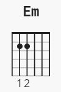
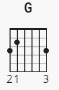
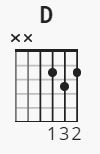
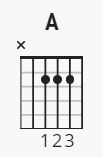

Intro
Capo 1. fret
|--------------------------------|-----------------------------------------|
|--------------------------------|-----------------------------------------|
|*-----------0------------2h4-2--|-----2---------------2-------------------|
|*--------4----------0-----------|--0-----4-/5------2----------------------|
|------2-------------------------|--------------0--------------------------|
|---0------------3---------------|-----------------------------------------|
|--------------------------------|-----------------------------------------|
|--------------------------------|-----------------------------------------|
|*-----------0------------2h4-2--|-----2-----------------------------------|
|*--------4----------0-----------|--0-----4-/5-----------------------------|
|------2-------------------------|--------------0--------------------------|
|---0------------3---------------|-----------------------------------------|
| First to strum | Second to strum | Thirtd to strum | Fourth to strum |
|---|---|---|---|
|  |  |  |  |
Em G D A Em
I walk a lonely road, the only one that I have ever known
G D A Em
Don't know where it goes, but it's home to me and I walk alone